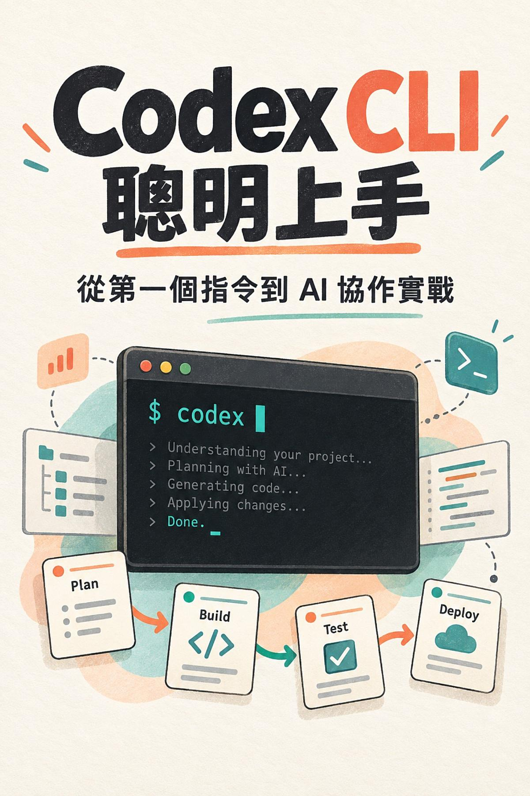

Google Play Books
Codex CLI 聰明上手
從第一個指令到 AI 協作實戰

付費購買提供試閱版
Codex CLI 聰明上手
從第一個指令到 AI 協作實戰
Codex CLI 不只是替你產生程式碼的工具。要讓它在既有專案中可靠地完成工作，你還需要選對工作目錄、說清楚目標與限制，並親自檢查修改和驗收結果。本書以繁體中文帶你從第一個命令開始，透過待辦事項 CLI、既有程式除錯，以及閱讀清單網站分類篩選，逐步練習如何讓 Codex CLI 參與探索、規劃、修改、驗證與交付。內容涵蓋專案上下文、清楚交辦、權限與安全、指令驗證、Git 差異審查，以及可重複使用的工作流程。書中安排待辦搜尋、進度摘要與網站分類篩選等實作，並提供起始檔、提示範例和可自行檢查的驗收方式。適合具備基本終端機操作經驗，想開始在實際專案中使用 Codex CLI 的自學者與開發者。